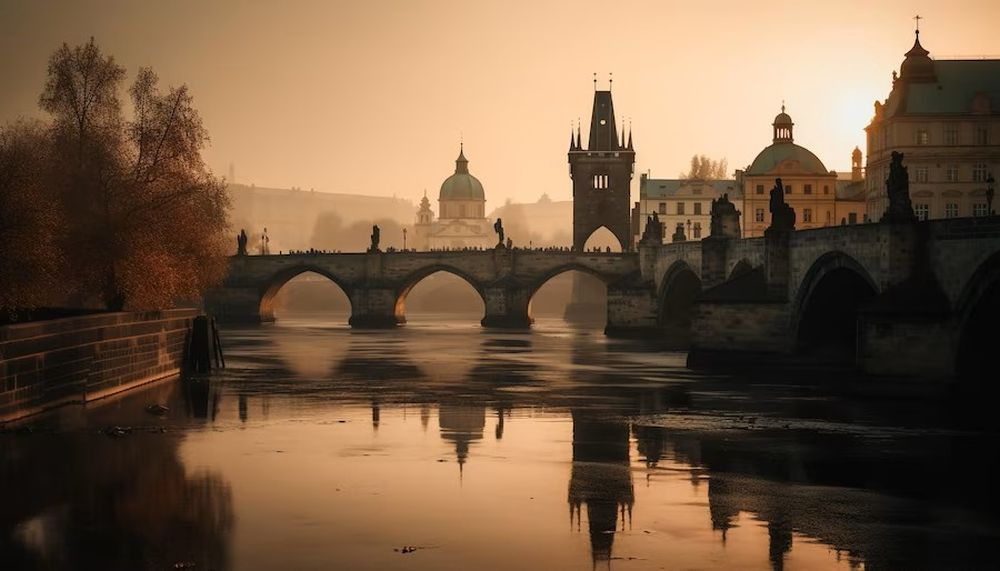

Descoperă Verona - O bijuterie romantică în Italia
Verona este un oraș plin de farmec și istorie, cunoscut pentru legătura sa cu Romeo și Julieta și arhitectura sa magnifică:
-

Arena din Verona - Amfiteatru roman
O arenă antică remarcabilă, folosită pentru evenimente culturale și spectacole.
-

Balconul Julietei - Loc romantic
Un loc legendar asociat cu povestea lui Romeo și Julieta, atras de cei în căutarea iubirii.
-

Castelul Vecchio - Istorie regală
O fortăreață medievală cu vedere la râul Adige, adăpostind muzee și colecții de artă.
-

Piazza delle Erbe - Piață centrală
O piață vibrantă cu arhitectură istorică, standuri de piață și atmosferă autentică.
-

Podul Pietra - Pod pitoresc
Un pod de piatră vechi, oferind vederi frumoase asupra orașului și râului.
Concluzii
Verona rămâne un oraș romantic și istoric, cu atracții care captează imaginația vizitatorilor.